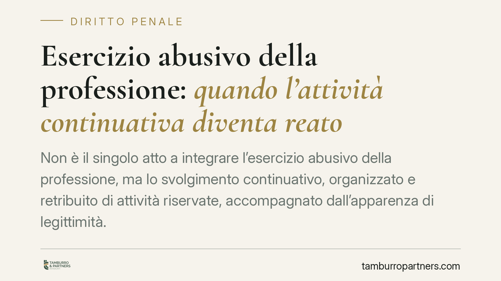

Esercizio abusivo della professione: quando l'attività continuativa diventa reato
Non è il singolo atto a integrare l'esercizio abusivo della professione, ma lo svolgimento continuativo, organizzato e retribuito di attività riservate, accompagnato dall'apparenza di legittimità. Un recente orientamento della Cassazione ribadisce questa impostazione, con ricadute pesanti: responsabilità penale ex art. 348 c.p. e, sul piano civile, nullità del contratto e inesigibilità del compenso. Un tema cruciale per società di servizi e committenti.

Il fatto e perché conta
La distinzione tra la prestazione occasionale e l'attività professionale strutturata non è un dettaglio teorico. È la linea che separa un comportamento lecito dal reato previsto dall'art. 348 del codice penale.
Un recente orientamento della Corte di Cassazione ha ribadito un principio consolidato: l'esercizio abusivo della professione non si misura sul singolo atto, ma sul modo in cui l'attività viene svolta nel tempo. Contano la continuità, l'organizzazione e la retribuzione, insieme all'apparenza di un legittimo esercizio professionale.
Inquadramento normativo
L'art. 348 c.p. punisce chi esercita una professione per la quale è richiesta una speciale abilitazione dello Stato senza averne titolo. La norma è stata profondamente ridisegnata dalla L. 3/2018 (c.d. legge Lorenzin), che ne ha inasprito il quadro sanzionatorio e precisato l'ambito applicativo, introducendo tra l'altro pene accessorie e la confisca dei beni destinati o derivanti dal reato.
La giurisprudenza individua quattro indici convergenti:
- continuità: l'attività si ripete nel tempo, non è un episodio isolato;
- organizzazione: esistono una struttura, mezzi, collaboratori;
- retribuzione: la prestazione è a titolo oneroso;
- apparenza di legittimità: il soggetto si presenta come professionista abilitato.
Proprio sull'ultimo elemento permane qualche oscillazione interpretativa dopo la riforma del 2018: una lettura rigorosa lo considera indispensabile a distinguere l'abuso dal mero svolgimento di attività non riservate; un'altra lo valorizza come circostanza, ma non come requisito necessario. Il nucleo resta però la strutturazione dell'attività.
Le conseguenze civili: contratto e compenso
Il profilo che spesso sorprende committenti e società riguarda il contratto stipulato con chi esercita abusivamente.
Per le professioni intellettuali protette, cioè quelle il cui esercizio è subordinato all'iscrizione in Albi, opera l'art. 2231 c.c.: la prestazione eseguita da chi non è iscritto non dà azione per il pagamento. In altri termini, il compenso è inesigibile. Chi ha pagato può valutare la ripetizione di quanto versato ai sensi dell'art. 2033 c.c. (pagamento dell'indebito).
Sul fondamento della nullità del contratto permane un dibattito. Una tesi la riconduce alla violazione di norma imperativa ex art. 1418 c.c.; un'altra la radica nell'illiceità della causa. La differenza non è solo dogmatica: incide sul perimetro dei rimedi e sulla ripetibilità delle somme.
Attenzione, però, a una distinzione decisiva: l'art. 2231 c.c. riguarda le professioni protette da Albo. Le attività soggette a semplice abilitazione o autorizzazione seguono regimi non sempre sovrapponibili. La valutazione va fatta caso per caso.
Implicazioni pratiche
Per una società di servizi il rischio è duplice: esposizione penale di chi svolge materialmente l'attività riservata e perdita del diritto al compenso per le prestazioni erogate.
Per il committente che si affida a un soggetto privo di titolo, il pericolo è di aver pagato prestazioni invalide, con possibili vizi degli atti prodotti e difficoltà a far valere la responsabilità professionale, dato che manca la copertura tipica dell'iscritto all'Albo.
La soglia critica è il passaggio dall'episodio occasionale all'attività strutturata. Un consulto sporadico è cosa diversa da un'offerta stabile e organizzata di prestazioni riservate.
Cosa fare in concreto
- Mappate le attività riservate. Verificate quali servizi offerti richiedono iscrizione ad Albo o speciale abilitazione, distinguendoli da quelli liberi.
- Controllate i titoli di chi opera. Accertate l'iscrizione all'Albo dei collaboratori e dei professionisti coinvolti nelle prestazioni riservate.
- Rivedete i contratti con i clienti. Evitate formulazioni che lascino intendere un'abilitazione inesistente e definite con precisione l'oggetto della prestazione.
- Prima di affidare un incarico, verificate l'abilitazione del prestatore: una verifica preventiva riduce il rischio di pagare prestazioni inesigibili.
- Documentate i pagamenti. In caso di prestazione resa abusivamente, la tracciabilità è utile per valutare la ripetizione dell'indebito ex art. 2033 c.c.
Consigliamo di sottoporre a verifica legale ogni assetto organizzativo che preveda l'erogazione di servizi in aree a rischio di riserva professionale, prima dell'avvio dell'attività.
Disclaimer
Contributo informativo a cura di Tamburro & Partners Avvocati - Avv. Giuseppe Tamburro. Non costituisce parere legale.
Ogni condominio ha una storia a sé.
Se gestisci un'amministrazione e vuoi un confronto su una specifica questione condominiale, scrivi allo studio. Ti rispondiamo entro un giorno lavorativo.